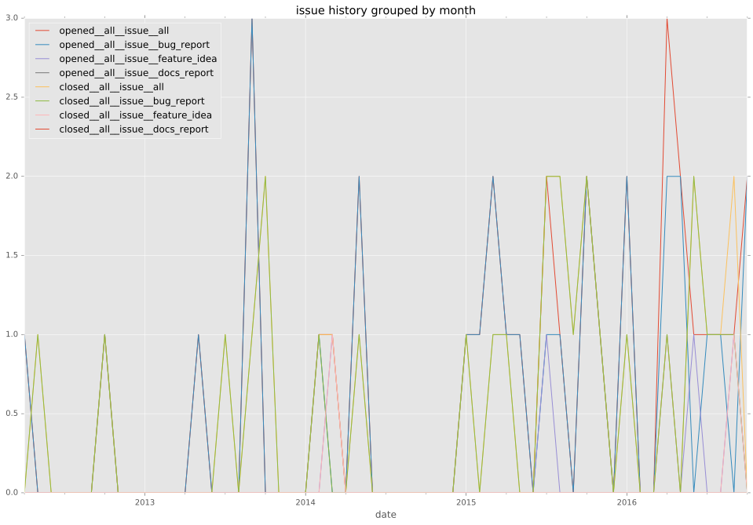
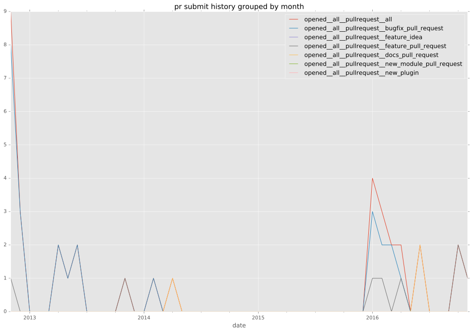

authors
maintainers
- ansible
contributors
- mpdehaan : 9 commits
- jpmens : 5 commits
- jeromew : 2 commits
- mikeputnam : 1 commits
- jctanner : 1 commits
- cgar : 1 commits
total issue counts
bugfix pull request: 49
pullrequest: 59
docs pull request: 2
feature pull request: 7
feature idea: 3
issue: 33
new plugin: 1
bug report: 30
issue history

pullrequest history

days open by issue type
feature pull request
count: 10
std: 43.166473616
min: 0
max: 95
median: 1.5
mean: 33.3
all
count: 117
std: 60.5293404971
min: 0
max: 401
median: 1.0
mean: 22.9743589744
pullrequest
count: 0
std: nan
min: nan
max: nan
median: nan
mean: nan
docs pull request
count: 4
std: 58.3123771882
min: 0
max: 101
median: 50.5
mean: 50.5
bugfix pull request
count: 76
std: 33.901166983
min: 0
max: 177
median: 0.5
mean: 9.13157894737
feature idea
count: 0
std: nan
min: nan
max: nan
median: nan
mean: nan
issue
count: 0
std: nan
min: nan
max: nan
median: nan
mean: nan
new plugin
count: 0
std: nan
min: nan
max: nan
median: nan
mean: nan
bug report
count: 27
std: 101.360165701
min: 0
max: 401
median: 4.0
mean: 54.037037037
closures grouped by total days open